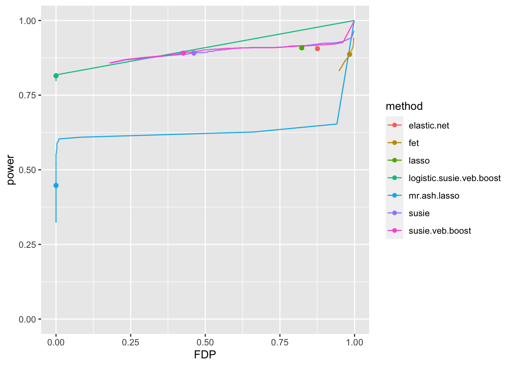
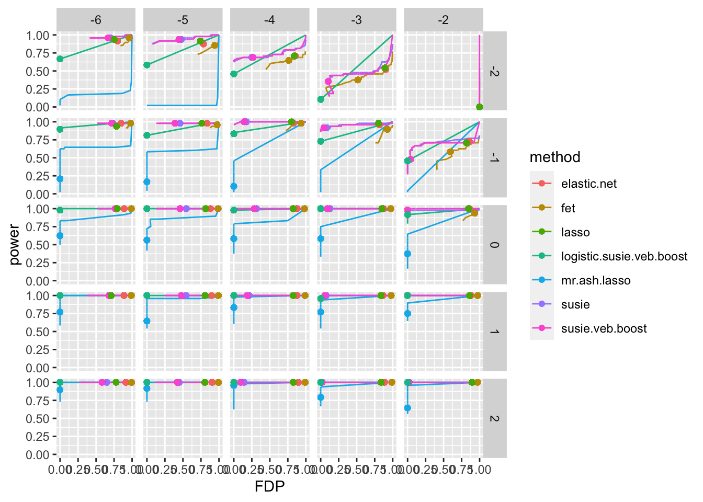
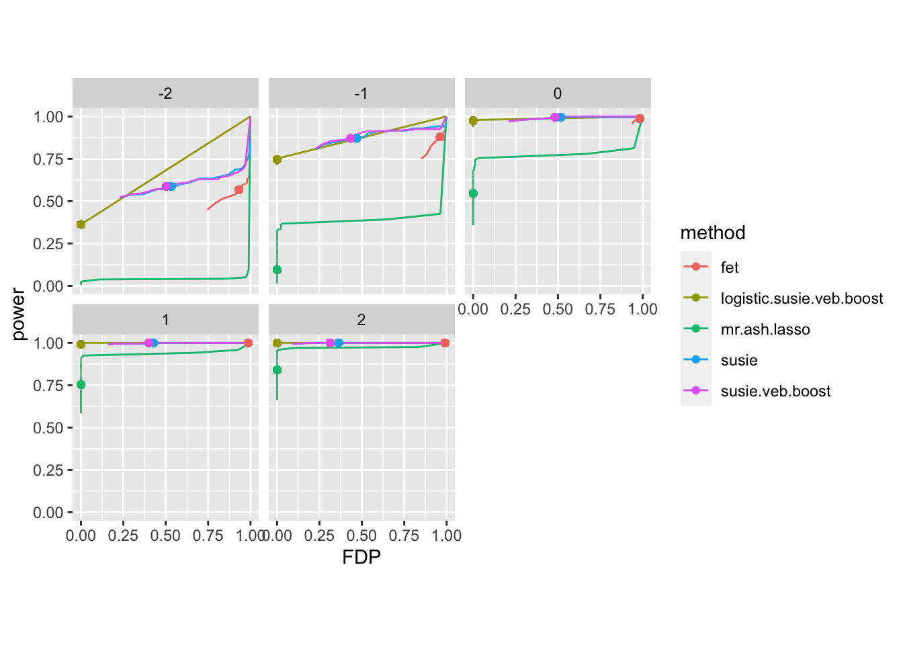
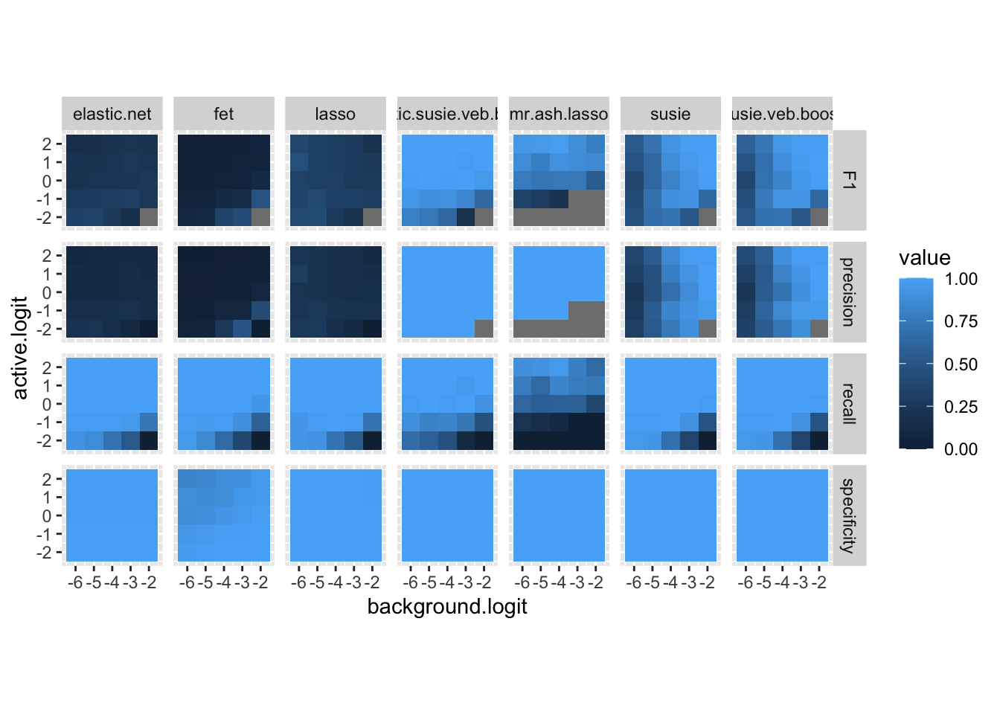
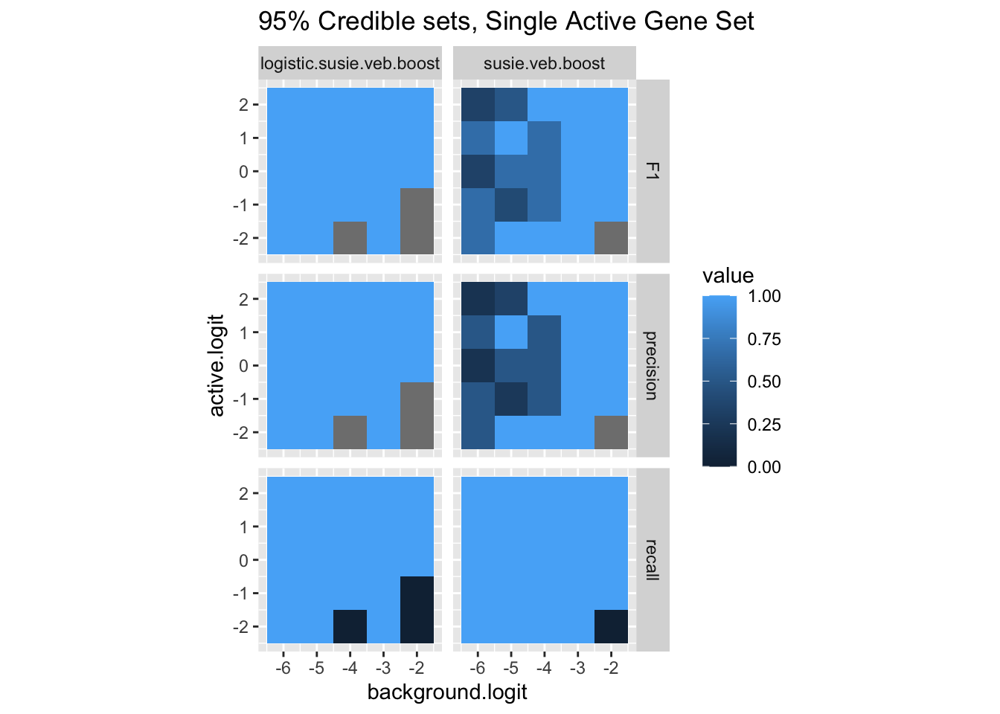
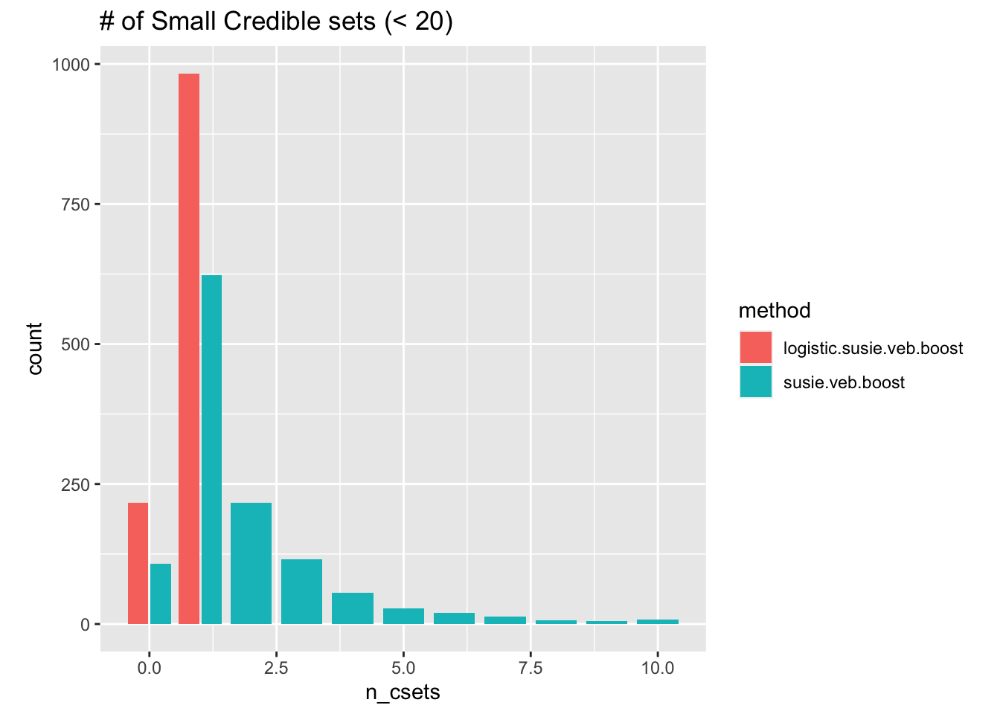

simulations
karltayeb
2021-04-13
Last updated: 2021-05-08
Checks: 7 0
Knit directory: logistic_susie_gsea/
This reproducible R Markdown analysis was created with workflowr (version 1.6.2). The Checks tab describes the reproducibility checks that were applied when the results were created. The Past versions tab lists the development history.
Great! Since the R Markdown file has been committed to the Git repository, you know the exact version of the code that produced these results.
Great job! The global environment was empty. Objects defined in the global environment can affect the analysis in your R Markdown file in unknown ways. For reproduciblity it’s best to always run the code in an empty environment.
The command set.seed(20210205) was run prior to running the code in the R Markdown file. Setting a seed ensures that any results that rely on randomness, e.g. subsampling or permutations, are reproducible.
Great job! Recording the operating system, R version, and package versions is critical for reproducibility.
Nice! There were no cached chunks for this analysis, so you can be confident that you successfully produced the results during this run.
Great job! Using relative paths to the files within your workflowr project makes it easier to run your code on other machines.
Great! You are using Git for version control. Tracking code development and connecting the code version to the results is critical for reproducibility.
The results in this page were generated with repository version 6890a09. See the Past versions tab to see a history of the changes made to the R Markdown and HTML files.
Note that you need to be careful to ensure that all relevant files for the analysis have been committed to Git prior to generating the results (you can use wflow_publish or wflow_git_commit). workflowr only checks the R Markdown file, but you know if there are other scripts or data files that it depends on. Below is the status of the Git repository when the results were generated:
Ignored files:
Ignored: .Rhistory
Ignored: .Rproj.user/
Ignored: analysis/GO_simulation_cache/
Untracked files:
Untracked: GO_simulation_cache/
Untracked: _targets.R
Untracked: _targets/
Untracked: _targets2.R
Untracked: analysis/GSEABenchmark_relevance_analysis.Rmd
Untracked: analysis/cache/
Untracked: analysis/initial_exploration.Rmd
Untracked: analysis/simulations2.Rmd
Untracked: analysis/test.Rmd
Untracked: cache/
Untracked: code/dream.targets.R
Untracked: code/fit.R
Untracked: code/gseabenchmark.targets.R
Untracked: code/logistic_susie.R
Untracked: code/plots.R
Untracked: code/score.R
Untracked: code/simulations.R
Untracked: code/utils.R
Untracked: data/DREAM_modules/
Untracked: data/GO_Membership.RData
Untracked: data/WebGestalt/
Untracked: data/WebGestalt_cache/
Untracked: data/gene_list.txt
Untracked: gseabenchmark.Rmd
Untracked: output/WebGestalt/
Unstaged changes:
Modified: .Rprofile
Modified: .gitignore
Modified: analysis/GO_simulation.Rmd
Note that any generated files, e.g. HTML, png, CSS, etc., are not included in this status report because it is ok for generated content to have uncommitted changes.
These are the previous versions of the repository in which changes were made to the R Markdown (analysis/simulations.Rmd) and HTML (docs/simulations.html) files. If you’ve configured a remote Git repository (see ?wflow_git_remote), click on the hyperlinks in the table below to view the files as they were in that past version.
| File | Version | Author | Date | Message |
|---|---|---|---|---|
| Rmd | 6890a09 | karltayeb | 2021-05-08 | wflow_publish(“analysis/simulations.Rmd”) |
Simulation
library(targets)
library(tidyverse)── Attaching packages ─────────────────────────────────────── tidyverse 1.3.1 ──✓ ggplot2 3.3.3 ✓ purrr 0.3.4
✓ tibble 3.1.1 ✓ dplyr 1.0.5
✓ tidyr 1.1.3 ✓ stringr 1.4.0
✓ readr 1.4.0 ✓ forcats 0.5.1# load and row_bind all targets matching a pattern
tar_agg <- function(pattern){
load.env <- new.env()
tar_load(matches(pattern), envir = load.env)
result <- grep(pattern , names(load.env), value=TRUE)
result <- do.call("list", mget(result, envir = load.env))
result <- bind_rows(result)
}Fully observed gene set
Let’s look at how different methods perform identifying a single, fully observed gene set. That is \(y_i = 1 \iff g_i \in G\) where \(G\) is the gene set of interest. Regression methods should get this perfectly, you can perfectly fit the gene list with \(y = {\bf e}_j X\). It’s interesting that elastic net fails at this.
The question here is pretty simple, do we detect the true active gene set? And how many other gene sets does each method report?
pattern <- '^c2.single.geneset.score_([^_])*$'
result <- tar_agg(pattern)
# plot histogram number of false positives
result %>%
unnest(scores) %>%
mutate(thresh = ifelse(method %in% c('elastic.net', 'lasso'), thresh + 0.95, thresh)) %>%
filter(near(thresh, 0.95)) %>%
group_by(method) %>%
mutate(FP = ifelse(FP > 5, 5, FP)) %>%
group_by(method, FP) %>% summarise(freq = length(FP)) %>%
ggplot(aes(x=factor(FP), y=freq, fill=method)) + geom_bar(stat="identity") + facet_wrap(vars(method))`summarise()` has grouped output by 'method'. You can override using the `.groups` argument.# plot
result %>%
unnest(scores) %>%
mutate(thresh = ifelse(method %in% c('elastic.net', 'lasso'), thresh + 0.95, thresh)) %>%
filter(near(thresh, 0.95)) %>%
group_by(method, TP) %>% summarise(freq = length(TP)) %>%
ggplot(aes(x=factor(TP), y=freq, fill=method)) + geom_bar(stat="identity") + facet_wrap(vars(method))`summarise()` has grouped output by 'method'. You can override using the `.groups` argument.Elastic net and Fisher’s exact test are the only ones that return False positives. mr.ash.lasso is the only one that misses a few of the gene sets. This is odd because it’s initialized with lasso.
Compare SuSiE with VEB boost implimentation
I found that SuSiE was running slower than veb.boost when using larger gene set matrices. This is just a check to demonstrate that the PIPs agree.
They do not agree perfectly, but for now I will go ahead using susie.veb.boost
tar_load(cas.fit_susie, branches = 2)
tar_load(cas.fit_susie.veb.boost, branches = 2)
pip.comp <- tibble(
susie.pip = cas.fit_susie$pip,
susie.veb.boost.pip = cas.fit_susie.veb.boost$pip
)
pip.comp %>% unnest(everything()) %>% ggplot(aes(x=susie.pip, y=susie.veb.boost.pip)) + geom_point()1 active gene set
Now we simulate one active gene set. The log odds of observing the genes in the active gene set are controlled by active.logit and the log odds of observing background genes is controlled by background.logit
pattern <- '^l1.sim.score_([^_])*$'
result <- tar_agg(pattern)
plot.data <- result %>%
filter(!(method %in% c('elastic.net', 'lasso'))) %>%
unnest(scores) %>%
group_by(method, background.logit, active.logit, thresh) %>%
arrange(dplyr::desc(thresh)) %>%
mutate(power = sum(TP) / sum(TP + FN), FDP = sum(FP) / sum(FP + TP))
ggplot(data=plot.data, aes(x=FDP, y=power, color=method)) +
geom_path() +
geom_point(data=subset(plot.data, near(thresh, 0.95))) +
facet_grid(vars(active.logit), vars(background.logit))Warning: Removed 6012 row(s) containing missing values (geom_path).Warning: Removed 480 rows containing missing values (geom_point).
Rows are increasing log odds of observing genes in active gene sets. Columns are increasing log odds of observing background genes. Most of these simulation scenarios. Points indicate a PIP threshold of 0.95 (for Fisher’s exact test, \(< 0.05\) Benjamini Hochberg corrected p-value). Logistic SuSiE and SuSiE do better than Mr. Ash overall. Logistic SuSiE often has lower power at the cutoff, but reliably keeps proportion of false discoveries low.
plot.data <- result %>%
filter(!(method %in% c('elastic.net', 'lasso'))) %>%
unnest(scores) %>%
group_by(method, background.logit, thresh) %>%
arrange(dplyr::desc(thresh)) %>%
mutate(power = sum(TP) / sum(TP + FN), FDP = sum(FP) / sum(FP + TP))
ggplot(data=plot.data, aes(x=FDP, y=power, color=method)) +
geom_path() +
geom_point(data=subset(plot.data, near(thresh, 0.95))) +
facet_wrap(vars(background.logit))Warning: Removed 6000 row(s) containing missing values (geom_path).
This only is a little easier to look at, each facet is a different setting of background.logit. Interestingly, SuSiE seems to do a worse job controlling false positives when there are few background genes in the gene list.
plot.data <- result %>%
filter(!(method %in% c('elastic.net', 'lasso'))) %>%
unnest(scores) %>%
group_by(method, active.logit, thresh) %>%
arrange(dplyr::desc(thresh)) %>%
mutate(power = sum(TP) / sum(TP + FN), FDP = sum(FP) / sum(FP + TP))
ggplot(data=plot.data, aes(x=FDP, y=power, color=method)) +
geom_path() +
geom_point(data=subset(plot.data, near(thresh, 0.95))) +
facet_wrap(vars(active.logit))Warning: Removed 6012 row(s) containing missing values (geom_path).Warning: Removed 240 rows containing missing values (geom_point).t <- 0.95
result %>%
unnest(scores) %>%
mutate(thresh = ifelse(method %in% c('elastic.net', 'lasso'), thresh + t, thresh)) %>%
filter(near(thresh, t)) %>%
group_by(method, background.logit, active.logit) %>%
summarise(
recall = sum(TP) / sum(TP + FN),
precision = sum(TP) / sum(TP + FP),
specificity = sum(TN) / sum(TN + FP)
) %>%
pivot_longer(c(recall, precision, specificity), names_to= 'metric') %>%
ggplot(aes(x=background.logit, y=active.logit, fill=value)) +
geom_tile() + facet_grid(vars(metric), vars(method)) + theme(aspect.ratio = 1)`summarise()` has grouped output by 'method', 'background.logit'. You can override using the `.groups` argument.
Another visualization of each models performance at a 0.95 cutoff. Bottom right corner there is no enrichment. Mr. Ash is often not reporting any gene sets when active.logit is small. We also see that SuSiE has higher recall than logistic SuSiE both when background.logit is large and active.logit is small.
Credible Sets
#l5/l10 sim
In these simulations we have 5 or 10 active gene sets. SuSiE type meothods are fit with \(L=10\). Simulations from a model where log odds are additive, intercept determined by background.logit, the log odds of observing a gene are k * active.logit where \(k\) is the number of active gene sets to which that gene is a member.
pattern <- '^cas.score_([^_])*$'
result <- tar_agg(pattern)
plot.data <- result %>%
filter(!(method %in% c('elastic.net', 'lasso'))) %>%
unnest(scores) %>%
group_by(method, background.logit, active.logit, thresh) %>%
arrange(desc(thresh)) %>%
mutate(power = sum(TP) / sum(TP + FN), FDP = sum(FP) / sum(FP + TP))
ggplot(data=plot.data, aes(x=FDP, y=power, color=method)) +
geom_path() +
geom_point(data=subset(plot.data, near(thresh, 0.95))) +
facet_grid(vars(active.logit), vars(background.logit))Warning: Removed 12096 row(s) containing missing values (geom_path).Warning: Removed 864 rows containing missing values (geom_point).
We see overall the same trend where SuSiE’s curve is better that logistic SuSiE, but it’s PIPs are not well calibrated. In all cases logistic SuSiE keeps the proportion of false discoveries low. SuSiE does not. I expect this situation is exacerbated when a gene is in multiple active gene sets, but the simulations with one active gene set show that this is not a complete explaination.
plot.data <- result %>%
filter(!(method %in% c('elastic.net', 'lasso'))) %>%
unnest(scores) %>%
group_by(method, n_active, thresh) %>%
arrange(desc(thresh)) %>%
mutate(power = sum(TP) / sum(TP + FN), FDP = sum(FP) / sum(FP + TP))
ggplot(data=plot.data, aes(x=FDP, y=power, color=method)) +
geom_path() +
geom_point(data=subset(plot.data, near(thresh, 0.95))) +
facet_wrap(vars(n_active)) + theme(aspect=1)Warning: Removed 12000 row(s) containing missing values (geom_path).Again, this one is probability easier to look at. Facet over number of active gene sets.
5 active components
t <- 0.95
result %>%
unnest(scores) %>%
filter(n_active == 5) %>%
mutate(thresh = ifelse(method %in% c('elastic.net', 'lasso'), thresh + t, thresh)) %>%
filter(near(thresh, t)) %>%
group_by(method, background.logit, active.logit) %>%
summarise(
recall = sum(TP) / sum(TP + FN),
precision = sum(TP) / sum(TP + FP),
specificity = sum(TN) / sum(TN + FP)
) %>%
pivot_longer(c(recall, precision, specificity), names_to= 'metric') %>%
ggplot(aes(x=background.logit, y=active.logit, fill=value)) +
geom_tile() + facet_grid(vars(metric), vars(method)) + theme(aspect.ratio = 1)`summarise()` has grouped output by 'method', 'background.logit'. You can override using the `.groups` argument.
10 active components
t <- 0.95
result %>%
unnest(scores) %>%
filter(n_active == 10) %>%
mutate(thresh = ifelse(method %in% c('elastic.net', 'lasso'), thresh + t, thresh)) %>%
filter(near(thresh, t)) %>%
group_by(method, background.logit, active.logit) %>%
summarise(
recall = sum(TP) / sum(TP + FN),
precision = sum(TP) / sum(TP + FP),
specificity = sum(TN) / sum(TN + FP)
) %>%
pivot_longer(c(recall, precision, specificity), names_to= 'metric') %>%
ggplot(aes(x=background.logit, y=active.logit, fill=value)) +
geom_tile() + facet_grid(vars(metric), vars(method)) + theme(aspect.ratio = 1)`summarise()` has grouped output by 'method', 'background.logit'. You can override using the `.groups` argument.
Credible sets
pattern <- '^cas.score.cs_([^_])*$'
result <- tar_agg(pattern)
result %>% select(cs_in_causal, n_causal, cs_size, method) %>%
unnest(c(cs_in_causal, n_causal, cs_size)) %>%
mutate(contains_causal = n_causal > 0) %>%
ggplot(aes(x=cs_size, fill=contains_causal)) +
geom_histogram(position='dodge') + facet_wrap(vars(method)) + theme(aspect=1.0)Adding missing grouping variables: `background.logit`, `active.logit`, `n_active`, `rep`, `batch``stat_bin()` using `bins = 30`. Pick better value with `binwidth`.
result %>% select(cs_in_causal, n_causal, cs_size, method) %>%
unnest(c(cs_in_causal, n_causal, cs_size)) %>%
mutate(contains_causal = n_causal > 0) %>%
filter(cs_size < 5) %>%
ggplot(aes(x=cs_size, fill=contains_causal)) +
geom_histogram(position='dodge') + facet_wrap(vars(method)) + theme(aspect=1.0)Adding missing grouping variables: `background.logit`, `active.logit`, `n_active`, `rep`, `batch``stat_bin()` using `bins = 30`. Pick better value with `binwidth`.Just a quick look at which credible sets have active gene sets. Virtually all of the small credible sets are singletons, more of the logistic SuSiE gene sets are false positives.
result %>% rowwise() %>% mutate(
TP = sum((n_causal > 0) & (cs_size < 10)),
FN = n_active - TP,
FP = sum((n_causal == 0) & (cs_size < 10)),
recall = TP / (TP + FN),
precision = TP / (TP + FP),
) %>%
select(n_active, background.logit, active.logit, method, recall, precision) %>%
pivot_longer(c(recall, precision), names_to= 'metric') %>%
ggplot(aes(x=background.logit, y=active.logit, fill=value)) +
geom_tile() + facet_grid(vars(metric), vars(method)) + theme(aspect.ratio = 1)Adding missing grouping variables: `rep`, `batch`
Recall values above 1 indicate that multiple credible sets have the same active gene set(s). Let’s redo this counting unique active credible sets discovered.
result %>% rowwise() %>% mutate(
TP = length(unique(unlist(cs_in_causal[cs_size < 5]))),
FN = n_active - TP,
FP = sum((n_causal == 0) & (cs_size < 5)),
recall = TP / (TP + FN),
precision = TP / (TP + FP),
) %>%
select(n_active, background.logit, active.logit, method, recall, precision) %>%
pivot_longer(c(recall, precision), names_to= 'metric') %>%
ggplot(aes(x=background.logit, y=active.logit, fill=value)) +
geom_tile() + facet_grid(vars(metric), vars(method)) + theme(aspect.ratio = 1)Adding missing grouping variables: `rep`, `batch`result %>% rowwise() %>% mutate(
TP = length(unique(unlist(cs_in_causal[cs_size < 5]))),
FN = n_active - TP,
FP = sum((n_causal == 0) & (cs_size < 5)),
recall = TP / (TP + FN),
precision = TP / (TP + FP),
) %>%
select(n_active, background.logit, active.logit, method, recall, precision) %>%
pivot_longer(c(recall, precision), names_to= 'metric') %>%
ggplot(aes(x=metric, y=value, fill=method)) + geom_boxplot() + facet_wrap(vars(active.logit))Adding missing grouping variables: `rep`, `batch`Warning: Removed 476 rows containing non-finite values (stat_boxplot).
sessionInfo()R version 4.0.5 (2021-03-31)
Platform: x86_64-apple-darwin17.0 (64-bit)
Running under: macOS Catalina 10.15.6
Matrix products: default
BLAS: /Library/Frameworks/R.framework/Versions/4.0/Resources/lib/libRblas.dylib
LAPACK: /Library/Frameworks/R.framework/Versions/4.0/Resources/lib/libRlapack.dylib
locale:
[1] en_US.UTF-8/en_US.UTF-8/en_US.UTF-8/C/en_US.UTF-8/en_US.UTF-8
attached base packages:
[1] stats graphics grDevices utils datasets methods base
other attached packages:
[1] forcats_0.5.1 stringr_1.4.0 dplyr_1.0.5 purrr_0.3.4
[5] readr_1.4.0 tidyr_1.1.3 tibble_3.1.1 ggplot2_3.3.3
[9] tidyverse_1.3.1 conflicted_1.0.4 targets_0.4.2.9000 workflowr_1.6.2
loaded via a namespace (and not attached):
[1] httr_1.4.2 sass_0.3.1 bit64_4.0.5
[4] jsonlite_1.7.2 modelr_0.1.8 bslib_0.2.4
[7] assertthat_0.2.1 highr_0.9 cellranger_1.1.0
[10] yaml_2.2.1 lattice_0.20-41 pillar_1.6.0
[13] backports_1.2.1 glue_1.4.2 digest_0.6.27
[16] promises_1.2.0.1 rvest_1.0.0 colorspace_2.0-0
[19] Matrix_1.3-2 htmltools_0.5.1.1 httpuv_1.6.0
[22] pkgconfig_2.0.3 broom_0.7.6 VEB.Boost_0.0.0.9014
[25] haven_2.4.1 scales_1.1.1 processx_3.5.1
[28] whisker_0.4 later_1.2.0 spatstat.utils_2.1-0
[31] git2r_0.28.0 generics_0.1.0 farver_2.1.0
[34] ellipsis_0.3.1 cachem_1.0.4 withr_2.4.2
[37] cli_2.5.0 magrittr_2.0.1 crayon_1.4.1
[40] readxl_1.3.1 memoise_2.0.0 evaluate_0.14
[43] ps_1.6.0 data.tree_1.0.0 fs_1.5.0
[46] fansi_0.4.2 xml2_1.3.2 tools_4.0.5
[49] data.table_1.14.0 hms_1.0.0 lifecycle_1.0.0
[52] munsell_0.5.0 reprex_2.0.0 callr_3.7.0
[55] compiler_4.0.5 jquerylib_0.1.4 rlang_0.4.10
[58] grid_4.0.5 rstudioapi_0.13 igraph_1.2.6
[61] labeling_0.4.2 rmarkdown_2.7 gtable_0.3.0
[64] codetools_0.2-18 DBI_1.1.1 R6_2.5.0
[67] lubridate_1.7.10 knitr_1.33 fastmap_1.1.0
[70] bit_4.0.4 utf8_1.2.1 rprojroot_2.0.2
[73] stringi_1.5.3 parallel_4.0.5 Rcpp_1.0.6
[76] vctrs_0.3.7 dbplyr_2.1.1 tidyselect_1.1.0
[79] xfun_0.22